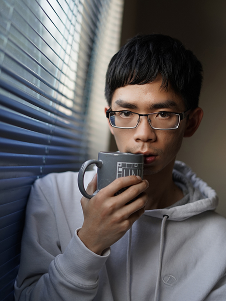
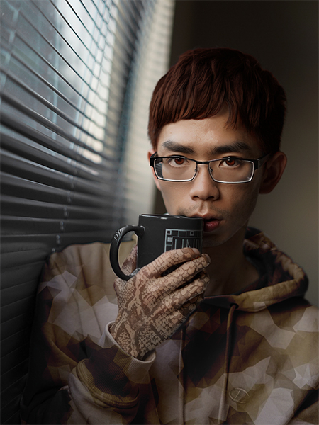

Home Photoshop Illistrator Flash Print Contact
Before  After 
The first image was taken when I took a portraiture class, and I was exploring how to utilize north light to take photos. What I found was that taking photos under north light is very good for portraiture because the north light is a light that is not direct to project on an object/subject. Furthermore, I took this picture during sunset time, so it would be a perfect light for taking the self-portrait.
The second image was my Photoshop’s homework. For this homework, I needed to demonstrate my knowledge of skills learned in the beginning Photoshop class. I used different kind of blend modes and layer masks for each layer in order to change the textures and patterns of the original picture. The concept was done with a super hero type theme but subtle as if morphing.